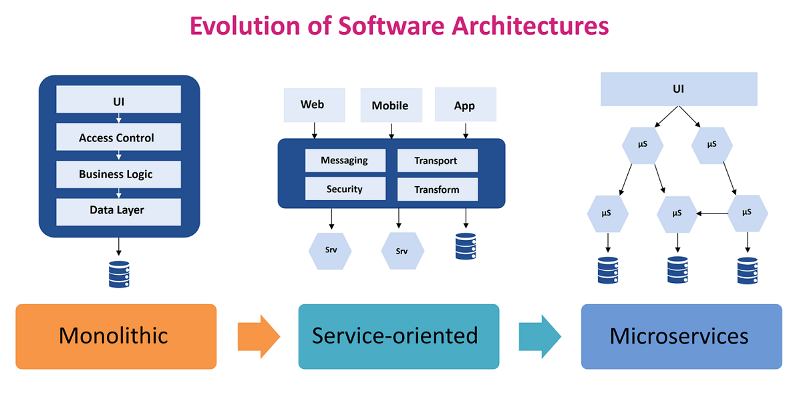

Software architecture
Links:
Software architecture:
refers to the fundamental structures of a software system and the discipline of creating such structures and systems. Each structure comprises software elements, relations among them, and properties of both elements and relations.[1] The architecture of a software system is a metaphor, analogous to the architecture of a building.[2] It functions as a blueprint for the system and the developing project, laying out the tasks necessary to be executed by the design teams.[3]
Architecture activities:
There are many activities that a software architect performs. A software architect typically works with project managers, discusses architecturally significant requirements with stakeholders, designs a software architecture, evaluates a design, communicates with designers and stakeholders, documents the architectural design and more.[23] There are four core activities in software architecture design.[24] These core architecture activities are performed iteratively and at different stages of the initial software development life-cycle, as well as over the evolution of a system.
Architectural analysis:
is the process of understanding the environment in which a proposed system will operate and determining the requirements for the system. The input or requirements to the analysis activity can come from any number of stakeholders and include items such as:
what the system will do when operational (the functional requirements)
how well the system will perform runtime non-functional requirements such as reliability, operability, performance efficiency, security, compatibility defined in ISO/IEC 25010:2011 standard[25]
development-time of non-functional requirements such as maintainability and transferability defined in ISO 25010:2011 standard[25]
business requirements and environmental contexts of a system that may change over time, such as legal, social, financial, competitive, and technology concerns[26]
Architectural synthesis:
or design is the process of creating an architecture. Given the architecturally significant requirements determined by the analysis, the current state of the design and the results of any evaluation activities, the design is created and improved.[24][4]:311–326
Architecture evaluation:
is the process of determining how well the current design or a portion of it satisfies the requirements derived during analysis. An evaluation can occur whenever an architect is considering a design decision, it can occur after some portion of the design has been completed, it can occur after the final design has been completed or it can occur after the system has been constructed. Some of the available software architecture evaluation techniques include Architecture Tradeoff Analysis Method (ATAM) and TARA.[28] Frameworks for comparing the techniques are discussed in frameworks such as SARA Report[16] and Architecture Reviews: Practice and Experience.[29]
